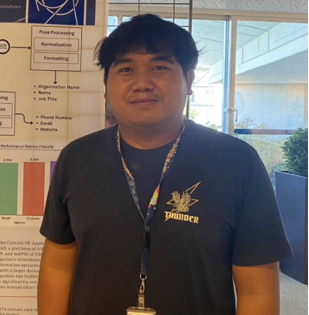

U.S. CMS Software & Computing Interns
The Software and Computing Research Initiative provides funding for undergraduate students in various research areas.
Current Interns

Aug 2025 - May 2026

Jan - Dec 2025
Former Interns

Jun 2023 - May 2025

May 2023 - Apr 2024

Jan 2023 - Dec 2024